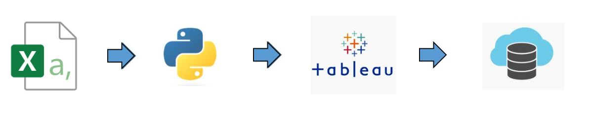
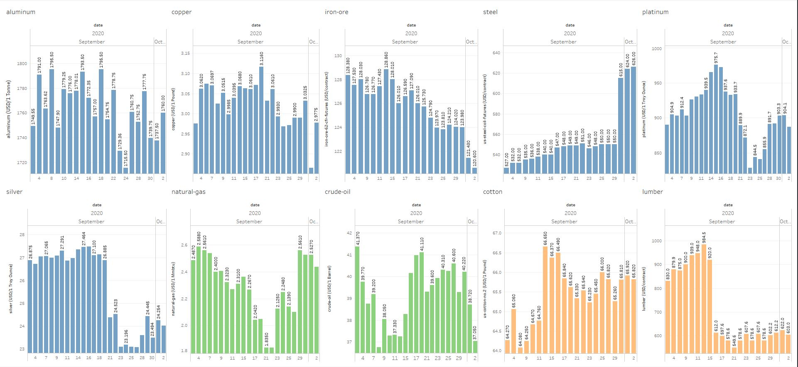

Data Warehousing for Business Insights
Intro
Setting a process of data collection and data management to provide meaningful business insights.
The process steps:
- CSV as dasta extracts from different systems.
- Python for ETL (extract, transform, load).
- Tableau for data visualization dasboards.
- Server to get dasboard published for stakeholders.
- Busines Analysis.
- New data coming in from systems to storage.
- Go to step 1.
ETL:
- It can be defined as a repeatable programmed data movement.
- It stands for:
- extract: getting data from different sources.
- transform: filter/map/enrich/combine/validate/sort/...
- load: store data in the data warehouse or data mart.
Data Warehouse (DW) vs Data Mart (DM):
- DW is broadly focused all the departments. It is possible that it can even represent the entire company.
- DM is a specific business subject-oriented, and it is used at a department level.
Features
App includes following features:
Demo
Workflow:
Dashboard:

Goods pricing analysis:
- Python script combines flat files into one Tableau input.
- In this case I use static source which is CSV flat files (batch processing).
- However data pipelines are built also for real-time sources where target system requires constant data update (stream processing).
- Data pipeline can route the processed data into another applications like Tableu for building dashboards.
- Once dashboard built, there is the Tableau option for sending it into server.
- Once published, we can perfrom Business Analysis.
- Making decisions based on BA leads to process improvements
- Process improvements generates new data that can undergo the Data Warehousing all over again.
- Data Warehouse is a great concept for monitoring business processes and continuous improvement implementation.
- Taking conclusions from the analysis that can improve business perfomance.
Setup
Following installation required:
Python library: pip install pandasTableau software